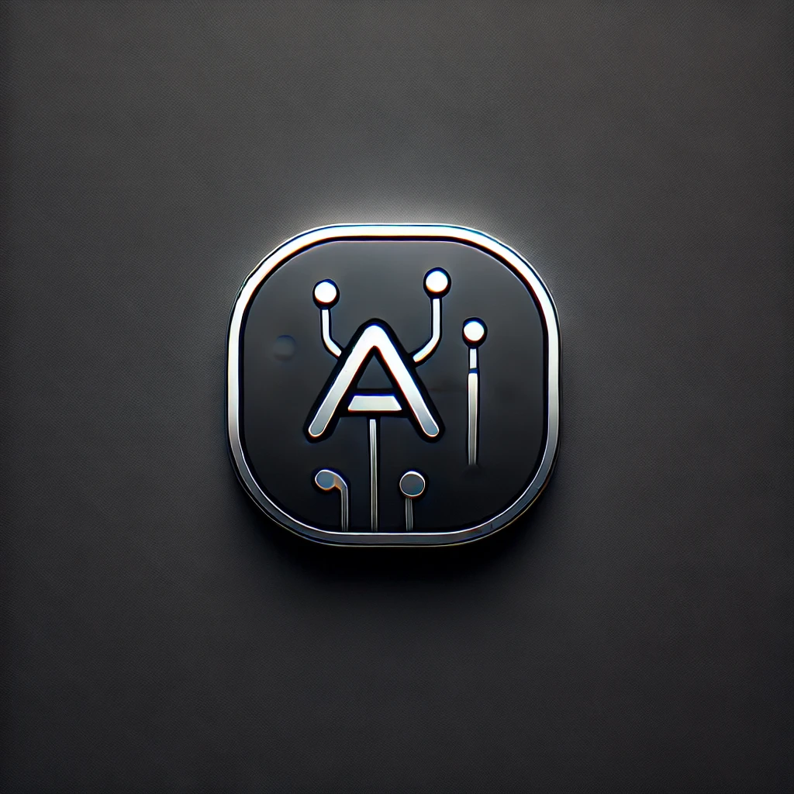

2010年 - はじまり
小学生の頃にプログラミングに興味を持ったきっかけや、当時のエピソードなど。
2015年 - 大学入学
大学での専攻やクラブ活動、学んだことや趣味・サークルでの活動など。
2018年 - インターン
企業でのインターンシップで学んだ技術や実務経験のエピソードを紹介。
2019年 - 個人プロジェクト
自分の興味分野に取り組み始めた話。具体的なプロジェクトの内容など。
2021年 - 就職
就職先の業界や役割、現在取り組んでいる業務やスキルアップについて。
2023年 - 現在
現在の活動状況や、今後の目標、挑戦してみたいことなど。